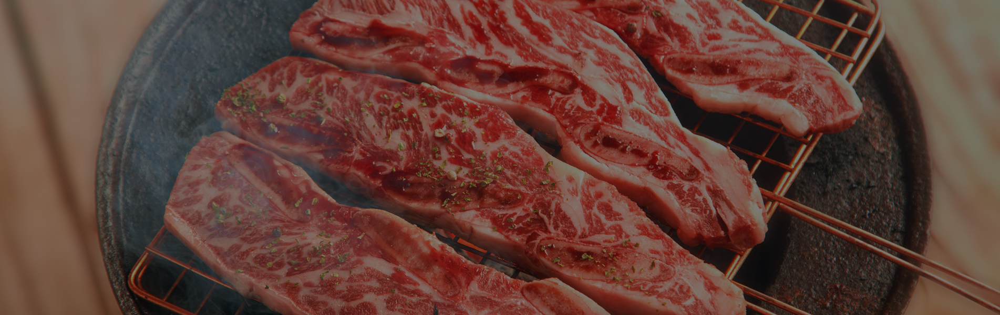
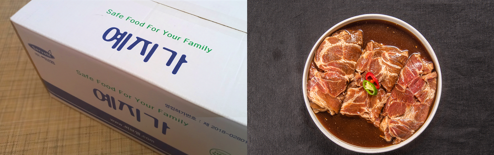
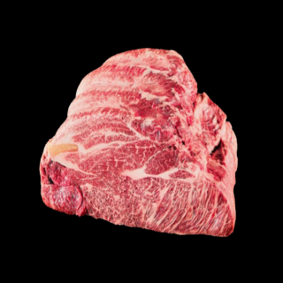
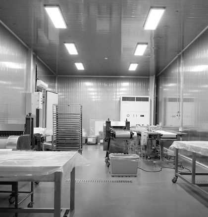
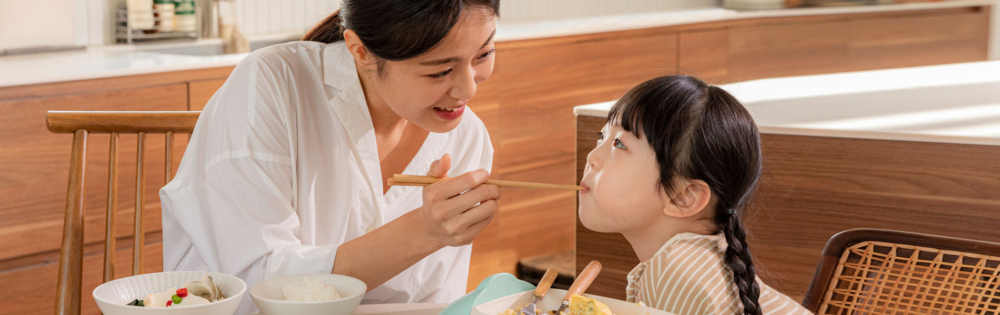

FOODI / SERVEM
식육 유통부터
가공·양념육까지.
국내외 식육을 공급하고, 필요한 제품으로 가공합니다.
푸드아이·써브엠의 사업과 제품을 만나보세요.
MEAT DISTRIBUTIONPROCESSINGSEASONED MEAT
FOODI / SERVEM식육유통 · 식육가공 · 양념가공 · 쇼핑몰
기존 제품 사진으로 만든 모션 영상 · 무음
SCROLL TO EXPLORE ↓WHAT WE DO
푸드아이·써브엠의
네 가지 사업영역
THE BUSINESS OF GOOD FOOD
식육의 공급부터,
제품의 완성까지.
국내외 식육을 유통하고, 다양한 형태로 가공하며, 양념육 제품으로 연결합니다. 푸드아이·써브엠이 하는 일을 네 가지 사업영역에서 살펴보세요.

OUR PRODUCTS
필요한 부위와 규격으로
거래할 제품을 찾으세요.
우육 46 · 돈육 15 · 양념육 4 · 선물세트 12
기존 홈페이지 등록 품목 기준

BEHIND THE PRODUCT
어디에서, 어떤 설비로
만들어지는지 확인하세요.


ABOUT FOODI / SERVEM
푸드아이와 써브엠
회사소개 보기 +FOODI × SERVEM
한 번의 거래보다,
신뢰를 지키는 파트너.
푸드아이·써브엠은 인사말에서 양질의 상품, 합리적인 가격, 필요한 시기의 공급을 약속합니다. 2005년부터 이어진 기존 홈페이지의 회사 기록을 함께 살펴보세요.
회사와 전체 연혁 살펴보기 ↗